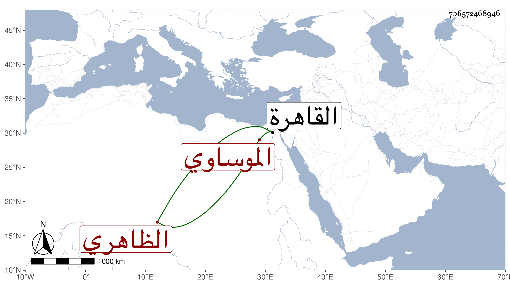

0902Sakhawi.DawLamic.ITO20230111-ara1.EIS1600.706572468946
Biography ID: 706572468946
1022
اقطوه الموساوي الظاهري برقوق كان من مماليكه ثم صار دوادارا صغيرا في أيام المؤيد ثم أمير عشرة وولي المهمندارية في أيام الأشرف ثم إمرة طبلخاناه ثم نفاه مرة بعد أخرى إلى أن مات بطالا بالقاهرة بعد ضعف بباطنه في ليلة الثلاثاء ثاني عشر صفر سنة اثنتين وخمسين وصلى عليه من الغد ولم يكن مشكور السيرة .
